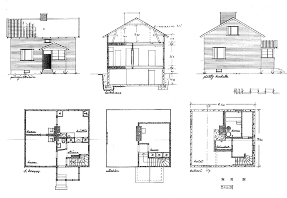
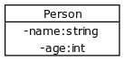

We'll now begin our journey in to the world of object-oriented programming. We'll start with focusing on describing concepts and data using objects. From there on, we'll learn how to add functionality, i.e., methods to our program.
Object-oriented programming is concerned with isolating concepts of a problem domain into separate entities and then using those entities to solve problems. Concepts related to a problem can only be considered once they've been identified. In other words, we can form abstractions from problems that make those problem easier to approach.
Once concepts related to a given problem have been identified, we can also begin to build constructs that represent them them into programs. These constructs, and the individual instances that are formed from them, i.e., objects, are used in solving the problem. The statement "programs are built from small, clear, and cooperative objects" may not make much sense yet. However, it will appear more sensible as we progress through the course, perhaps even self-evident.
We've already used some of the classes and objects provided by C#. A class defines the attributes of objects, i.e., the information related to them (instance variables and properties), and their commands, i.e., their methods. The values of instance (i.e., object) variables define the internal state of an individual object, whereas methods define the functionality it offers.
A Method is a piece of source code written inside a class that's been named and has the ability to be called. A method is always part of some class and is often used to modify the internal state of an object instantiated from a class.
As an example, List is a class offered by C#, and we've made use of objects instantiated from it in our programs. Below, an List object named integers is created and some integers are added to it.
// we create an object from the List class named integers
List integers = new List();
// let's add the values 15, 34, 65, 111 to the integers object
integers.Add(15);
integers.Add(34);
integers.Add(65);
integers.Add(111);
// we print the size of the integers object
Console.WriteLine(integers.Count);
An object is always instantiated by calling a method that created an object, i.e., a constructor by using the new keyword.
A class lays out a blueprint for any objects that are instantiated from it. Let's draw from an analogy from outside the world of computers. Detached houses are most likely familiar to most, and we can safely assume the existence of drawings somewhere that determine what exactly a detached house is to be like. A class is a blueprint. In other words, it specifies what kinds of objects can be instantiated from it:
Individual objects, detached houses in this case, are all created based on the same blueprints - they're instances of the same class. The states of individual objects, i.e., their attributes (such as the wall color, the building material of the roof, the color of its foundations, the doors' materials and color, ...) may all vary, however. The following is an "object of a detached-house class":
A class specifies what the objects instantiated from it are like.
We'll now familiarize ourselves with creating our own classes and defining the variable that belong to them.
A class is defined to represent some meaningful entity, where a "meaningful entity" often refers to a real-world object or concept. If a computer program had to process personal information, it would perhaps be meaningful to define a seperate class Person consisting of methods and attributes related to an individual.
Let's begin. The example is using the Exercise001 from the exercises, so you can follow the instructions along. We'll assume that we have a project template that has an empty main program, called Program.cs.
using System;
namespace Exercise001
{
class Program
{
public static void Main(string[] args)
{
}
}
}
The next part is meant for creating new classes in Visual Studio Code. You can, of course, use any editor you wish. This course material is intended for Visual Studio Code.
To add a new class, right click in the VSCode Explorer and select New File. This adds a new file to the folder you have open in VSCode.
As with variables and methods, the name of a class should be as descriptive as possible. It's usual for a class to live on and take on a different form as a program develops. As such, the class may have to be renamed at some later point
Name your file Person.cs. You must save it with a .cs extension at the end for it to be recognized as a csharp file.
Make sure the file Person.cs is in the same folder as Program.cs
Make sure to include the correct namespace so you can reference it from your Program.cs file.
We'll get to namespaces later. For now, whenever you create a new class, use the same namespace as existing classes.
Add this code to your file:
using System;
namespace Exercise001
{
public class Person
{
}
}
A class defines the attributes and behaviors of objects that are created from it. Let's decide that each person object has a name and an age. It's natural to represent the name as a string, and the age as an integer. We'll go ahead and add these to our blueprint:
public class Person {
private string name;
private int age;
}
We specify above that each object created from the Person class has a name and an age. Variables defined inside a class are called instance variables, or object fields or object attributes. Other names also seem to exist.
Instance variables are written on the lines following the class definition public class Person {. Each variable is preceded by the keyword private. The keyword private means that the variables are "hidden" inside the object. This is known as encapsulation.
In the class diagram, the variables associated with the class are defined as "variableName: variableType". The minus sign before the variable name indicates that the variable is encapsulated (it has the keyword private).
We have now defined a blueprint -- a class -- for the person object. Each new person object has the variables name and age, which are able to hold object-specific values. The "state" of a person consists of the values assigned to their name and age.
The person doesn't do anything yet, but we'll get there.